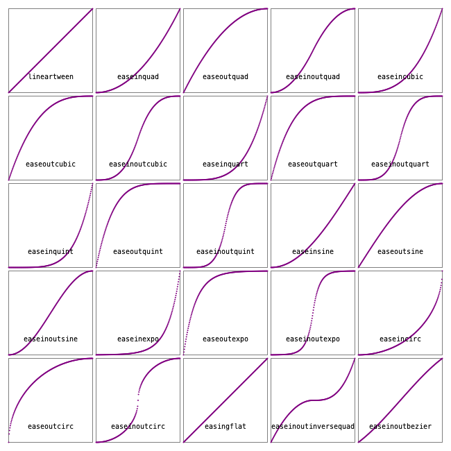
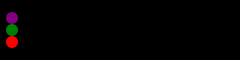

Animation helper functions
Luxor provides some functions to help you create animations—at least, it provides some assistance in creating lots of individual frames that can later be stitched together to form a moving animation, such as a GIF or MP4.
There are four steps to creating an animation.
1 Use Movie to create a Movie object which determines the title and dimensions.
2 Define some functions that draw the graphics for specific frames.
3 Define one or more Scenes that call these functions for specific frames.
4 Call the animate(movie::Movie, scenes) function, passing in the scenes. This creates all the frames and saves them in a temporary directory. Optionally, you can ask for ffmpeg (if it's installed) to make an animated GIF for you.
Example
using Luxor, Colors
demo = Movie(400, 400, "test")
function backdrop(scene, framenumber)
background("black")
end
function frame(scene, framenumber)
sethue(Colors.HSV(framenumber, 1, 1))
eased_n = scene.easingfunction(framenumber, 0, 1, scene.framerange.stop)
circle(polar(100, -pi/2 - (eased_n * 2pi)), 80, :fill)
text(string("frame $framenumber of $(scene.framerange.stop)"),
Point(O.x, O.y-190),
halign=:center)
end
animate(demo, [
Scene(demo, backdrop, 0:359),
Scene(demo, frame, 0:359, easingfunction=easeinoutcubic)
],
creategif=true)
In this example, for each frame numbered 0 to 359, the graphics are drawn by the backdrop() and frame() functions, in that order. A drawing is automatically created (in PNG format) and centered (origin()) so you can start drawing immediately. The finish() function is automatically called when all the drawing functions in the scenes have completed, and the process starts afresh for the next frame.
Luxor.Movie — Type.The Movie and Scene types and the animate() function are designed to help you create the frames that can be used to make an animated GIF or movie.
1 Provide width, height, title, and optionally a frame range to the Movie constructor:
demo = Movie(400, 400, "test", 1:500)2 Define one or more scenes and scene-drawing functions.
3 Run the animate() function, calling those scenes.
Example
bang = Movie(400, 100, "bang")
backdrop(scene, framenumber) = background("black")
function frame1(scene, framenumber)
background("white")
sethue("black")
eased_n = scene.easingfunction(framenumber, 0, 1, scene.framerange.stop)
circle(O, 40 * eased_n, :fill)
end
animate(bang, [
Scene(bang, backdrop, 0:200),
Scene(bang, frame1, 0:200, easingfunction=easeinsine)],
creategif=true,
pathname="/tmp/animationtest.gif")
Luxor.Scene — Type.The Scene type defines a function to be used to render a range of frames in a movie.
- the
moviecreated by Movie() - the
framefunctionis a function taking two arguments: the scene and the framenumber. - the
framerangedetermines which frames are processed by the function. Defaults to the entire movie. - the optional
easingfunctioncan be accessed by the framefunction to vary the transition speed
Luxor.animate — Function.animate(movie::Movie, scenelist::AbstractArray{Scene, 1};
creategif=false,
pathname=""
framerate=30,
tempdirectory=".")Create the movie defined in movie by rendering the frames define in the array of scenes in scenelist.
If creategif is true, the function tries to call ffmpeg on the resulting frames to build a GIF animation. This will be stored in pathname (an existing file will be overwritten; use a ".gif" suffix), or in (movietitle).gif in a temporary directory.
Example
animate(bang, [
Scene(bang, backdrop, 0:200),
Scene(bang, frame1, 0:200, easingfunction=easeinsine)],
creategif=true,
pathname="/tmp/animationtest.gif")animate(movie::Movie, scene::Scene; creategif=false, framerate=30)Create the movie defined in movie by rendering the frames define in scene.
Making the animation
For best results, you'll have to learn how to use something like ffmpeg, with its hundreds of options, which include codec selection, framerate adjustment and color palette tweaking. The creategif option for the animate function makes an attempt at running ffmpeg and assumes that it's already installed. Inside animate(), the first pass creates a GIF color palette, the second builds the file:
run(`ffmpeg -f image2 -i $(tempdirectory)/%10d.png -vf palettegen -y $(seq.stitle)-palette.png`)
run(`ffmpeg -framerate 30 -f image2 -i $(tempdirectory)/%10d.png -i $(seq.stitle)-palette.png -lavfi paletteuse -y /tmp/$(seq.stitle).gif`)Many movie editing programs, such as Final Cut Pro, will also let you import sequences of still images into a movie timeline.
Using scenes
Sometimes you want to construct an animation that has different components, layers, or scenes. To do this, you can specify scenes that are drawn only for specific frames.
As an example, consider a simple example showing the sun for each hour of a 24 hour day.
sun24demo = Movie(400, 400, "sun24", 0:23)
The backgroundfunction() draws a background that's used for all frames (animated GIFs like constant backgrounds):
function backgroundfunction(scene::Scene, framenumber)
background("black")
endA nightskyfunction() draws the night sky:
function nightskyfunction(scene::Scene, framenumber)
sethue("midnightblue")
box(O, 400, 400, :fill)
endA dayskyfunction() draws the daytime sky:
function dayskyfunction(scene::Scene, framenumber)
sethue("skyblue")
box(O, 400, 400, :fill)
endThe sunfunction() draws a sun at 24 positions during the day:
function sunfunction(scene::Scene, framenumber)
i = rescale(framenumber, 0, 23, 2pi, 0)
gsave()
sethue("yellow")
circle(polar(150, i), 20, :fill)
grestore()
endFinally a groundfunction() draws the ground:
function groundfunction(scene::Scene, framenumber)
gsave()
sethue("brown")
box(Point(O.x, O.y + 100), 400, 200, :fill)
grestore()
sethue("white")
endNow define a group of Scenes that make up the movie. The scenes specify which functions are to be used, and for which frames:
backdrop = Scene(sun24demo, backgroundfunction, 0:23) # every frame
nightsky = Scene(sun24demo, nightskyfunction, 0:6) # midnight to 06:00
nightsky1 = Scene(sun24demo, nightskyfunction, 17:23) # 17:00 to 23:00
daysky = Scene(sun24demo, dayskyfunction, 5:19) # 05:00 to 19:00
sun = Scene(sun24demo, sunfunction, 6:18) # 06:00 to 18:00
ground = Scene(sun24demo, groundfunction, 0:23) # every frameFinally, the animate function scans the scenes in the scenelist for a movie, and calls the functions for each frame to build the animation:
animate(sun24demo, [
backdrop, nightsky, nightsky1, daysky, sun, ground
],
framerate=5,
creategif=true)
Notice that for some frames, such as frame 0, 1, or 23, three of the functions are called: for others, such as 7 and 8, four or more functions are called. Also notice that the order of scenes and the use of backgrounds is important.
An alternative approach is to use the incoming framenumber as the master parameter that determines the position and appearance of all the graphics.
function frame(scene, framenumber)
background("black")
n = rescale(framenumber, scene.framerange.start, scene.framerange.stop, 0, 1)
n2π = rescale(n, 0, 1, 0, 2π)
sethue(n, 0.5, 0.5)
box(BoundingBox(), :fill)
if 0.25 < n < 0.75
sethue("yellow")
circle(polar(150, n2π + π/2), 20, :fill)
end
if n < 0.25 || n > 0.75
sethue("white")
circle(polar(150, n2π + π/2), 20, :fill)
end
endEasing functions
Transitions for animations often use non-constant and non-linear motions, and these are usually provided by easing functions. Luxor defines some of the basic easing functions and they're listed in the (unexported) array Luxor.easingfunctions. Each scene can have one easing function.
Most easing functions have names constructed like this:
ease[in|out|inout][expo|circ|quad|cubic|quart|quint]and there's an easingflat() linear transition.
In these graphs, the horizontal axis is time (between 0 and 1), and the vertical axis is the parameter value (between 0 and 1).

One way to use an easing function in a frame-making function is like this:
function moveobject(scene, framenumber)
background("white")
...
easedframenumber = scene.easingfunction(framenumber, 0, 1, scene.framerange.stop)
...This takes the current frame number, compares it with the end frame number of the scene, then adjusts it.
In the next example, the purple dot has sinusoidal easing motion, the green has cubic, and the red has quintic. They all traverse the drawing in the same time, but have different accelerations and decelerations.

fastandfurious = Movie(400, 100, "easingtests")
backdrop(scene, framenumber) = background("black")
function frame1(scene, framenumber)
sethue("purple")
eased_n = scene.easingfunction(framenumber, 0, 1, scene.framerange.stop)
circle(Point(-180 + (360 * eased_n), -20), 10, :fill)
end
function frame2(scene, framenumber)
sethue("green")
eased_n = scene.easingfunction(framenumber, 0, 1, scene.framerange.stop)
circle(Point(-180 + (360 * eased_n), 0), 10, :fill)
end
function frame3(scene, framenumber)
sethue("red")
eased_n = scene.easingfunction(framenumber, 0, 1, scene.framerange.stop)
circle(Point(-180 + (360 * eased_n), 20), 10, :fill)
end
animate(fastandfurious, [
Scene(fastandfurious, backdrop, 0:200),
Scene(fastandfurious, frame1, 0:200, easingfunction=easeinsine),
Scene(fastandfurious, frame2, 0:200, easingfunction=easeinoutcubic),
Scene(fastandfurious, frame3, 0:200, easingfunction=easeinoutquint)
],
creategif=true)Here's the definition of one of the easing functions:
function easeoutquad(t, b, c, d)
t /= d
return -c * t * (t - 2) + b
endHere:
tis the current time (framenumber) of the transitionbis the beginning value of the propertycis the change between the beginning and destination value of the propertydis the total length of the transition
Luxor.easingflat — Function.easingflat(t, b, c, d)A flat easing function, same as lineartween().
For all easing functions, the four parameters are:
ttime, ie the current framenumberbbeginning position or bottom value of the rangectotal change in position or top value of the rangedduration, ie a framecount
t/dort/=dnormalizestto between 0 and 1... * cscales up to the required range value... + badds the initial offset
Luxor.lineartween — Function.default linear transition - no easing, no acceleration
Luxor.easeinquad — Function.easeinquad(t, b, c, d)quadratic easing in - accelerating from zero velocity
Luxor.easeoutquad — Function.easeoutquad(t, b, c, d)quadratic easing out - decelerating to zero velocity
Luxor.easeinoutquad — Function.easeinoutquad(t, b, c, d)quadratic easing in/out - acceleration until halfway, then deceleration
Luxor.easeincubic — Function.easeincubic(t, b, c, d)cubic easing in - accelerating from zero velocity
Luxor.easeoutcubic — Function.easeoutcubic(t, b, c, d)cubic easing out - decelerating to zero velocity
Luxor.easeinoutcubic — Function.easeinoutcubic(t, b, c, d)cubic easing in/out - acceleration until halfway, then deceleration
Luxor.easeinquart — Function.easeinquart(t, b, c, d)quartic easing in - accelerating from zero velocity
Luxor.easeoutquart — Function.easeoutquart(t, b, c, d)quartic easing out - decelerating to zero velocity
Luxor.easeinoutquart — Function.easeinoutquart(t, b, c, d)quartic easing in/out - acceleration until halfway, then deceleration
Luxor.easeinquint — Function.easeinquint(t, b, c, d)quintic easing in - accelerating from zero velocity
Luxor.easeoutquint — Function.easeoutquint(t, b, c, d)quintic easing out - decelerating to zero velocity
Luxor.easeinoutquint — Function.easeinoutquint(t, b, c, d)quintic easing in/out - acceleration until halfway, then deceleration
Luxor.easeinsine — Function.easeinsine(t, b, c, d)sinusoidal easing in - accelerating from zero velocity
Luxor.easeoutsine — Function.easeoutsine(t, b, c, d)sinusoidal easing out - decelerating to zero velocity
Luxor.easeinoutsine — Function.easeinoutsine(t, b, c, d)sinusoidal easing in/out - accelerating until halfway, then decelerating
Luxor.easeinexpo — Function.easeinexpo(t, b, c, d)exponential easing in - accelerating from zero velocity
Luxor.easeoutexpo — Function.easeoutexpo(t, b, c, d)exponential easing out - decelerating to zero velocity
Luxor.easeinoutexpo — Function.easeinoutexpo(t, b, c, d)exponential easing in/out - accelerating until halfway, then decelerating
Luxor.easeincirc — Function.easeincirc(t, b, c, d)circular easing in - accelerating from zero velocity
Luxor.easeoutcirc — Function.easeoutcirc(t, b, c, d)circular easing out - decelerating to zero velocity
Luxor.easeinoutcirc — Function.easeinoutcirc(t, b, c, d)circular easing in/out - acceleration until halfway, then deceleration
Luxor.easeinoutinversequad — Function.easeinoutinversequad(t, b, c, d)ease in, then slow down, then speed up, and ease out